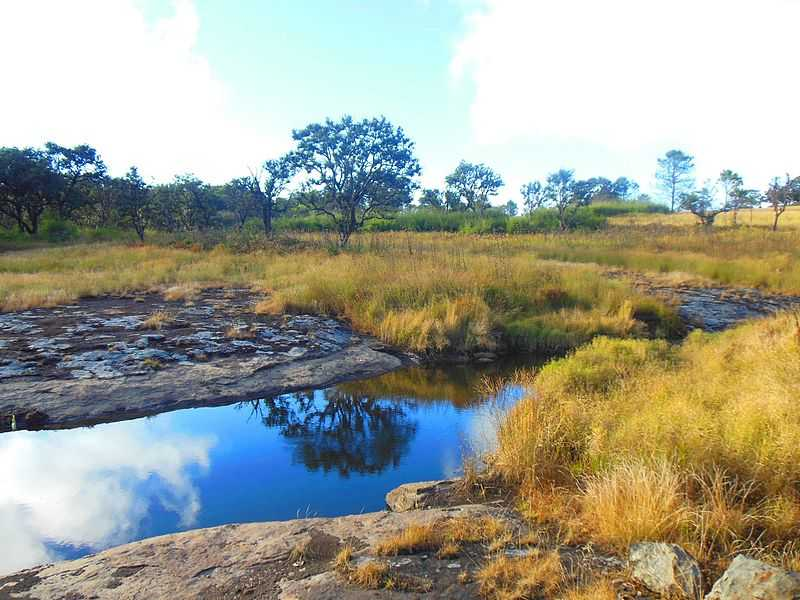
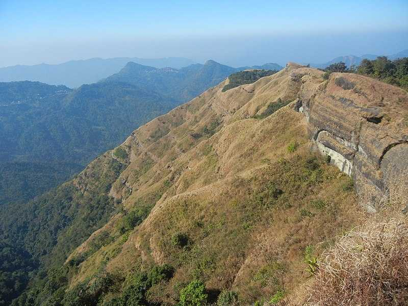
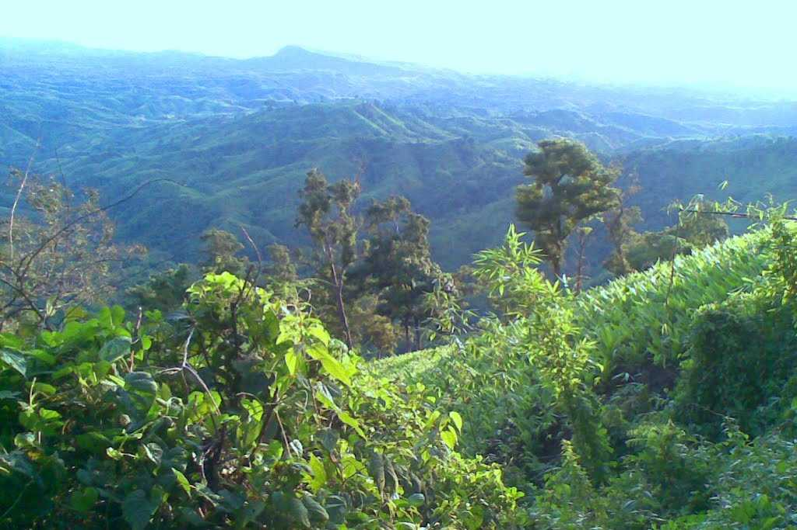
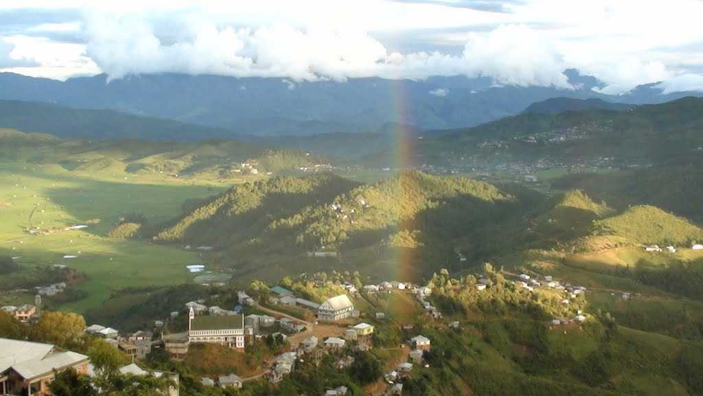

.jpg)

Lying at a height of 1132 m above sea level, Aizawl is a quaint city and the capital of the state of Mizoram in northeast India. Primarily dominated by the Mizo Tribe, Aizawl and its surrounding areas are lush with rolling hills and abundant greenery. The city, along with the majority of the state is known for its agricultural produce and ethnic handicrafts and apparel.
The Phawngpui Blue Mountain National Park or simply Phawngpui National Park is a gorgeous conservatory forest in Mizoram housing several rare animals and birds, adorned in tropical forests. The park overlooks rivers and mountain ranges further adding to its natural beauty and attractiveness.

Phawngpui is a quaint and serene village located in the state of Mizoram. Situated at an elevation of 2157 meters, this place proffers picturesque views. This place is surrounded by verdant trees and lofty mountains which in magnifying the beauty of the landscape.

A model village depicting the lifestyle of the Mizo people, Falkawn village is a unique cultural extravaganza for first time visitors to Mizoram. Falkawn village depicts the livelihoods and cultures of the Mizo people, who form the biggest tribe of the state.
The largest lake in the state of Mizoram, Tamdil Lake is a human-made lake exclusively to serve as a natural attraction for the state's tourism. Tamdil Lake, which translates into 'Lake of Mustard ' in Mizo, is a beautiful lake with the magnificent landscape, clear, blue water and serene environment.

At a height of 1465 meters, Reiek Tlang or simply Reiek is one of the highest hills of Mizoram. Located at a distance of 29 km away from the city of Aizawl, Reiek Tlang is an excellent viewpoint overlooking panoramic views of Aizawl and the surrounding valley with the backdrop of sceneries borrowed from the Mizo Hills.
Among the newer districts and the smallest of the eleven in Mizoram, Kolasib lies in northern Mizoram sharing a border with the Cachar district of Assam. It lies at a distance of 79 Kms north of Aizawl. Like most other districts of Mizoram, Kolasib is bountiful in culture and natural beauty.
Saiha is known as the fastest growing town in Mizoram, as the population has significantly risen in the last decade. Saiha is a census town in the Saiha district in Mizoram located at an average height of 729 meters above sea level. This town is considered to be a haven for angling enthusiasts.

The Mamit district is the fourth largest district of the state of Mizoram. The town of Mamit, the administrative headquarters of the district, is located around 95 kms from Aizawl to the west. Known for its exquisite scenic locales and magnificence, don't miss out to add this place in your itinerary in Mizoram.

The town of Champhai on the eastern border of Mizoram close to the Indo-Myanmar border is the administrative headquarters of the Champhai district. It is located at a distance of 188 Kms from the capital of Aizawl and is strategically and commercially important for the state of Mizoram as well as for India.
Literally meaning 'the bridge of rock', Lunglei is famous for its scenic beauty and natural setting. It is a small town, located around 170 km south of Aizawl whose name is derived from a bridge shaped rock found along Nghasih which is a tributary of the river Tlawng.
This town is picturesque in itself. Rather than certain sightseeing options like monuments or view-points, one can enjoy the lush greenery, trekking routes and interacting with the local people here.